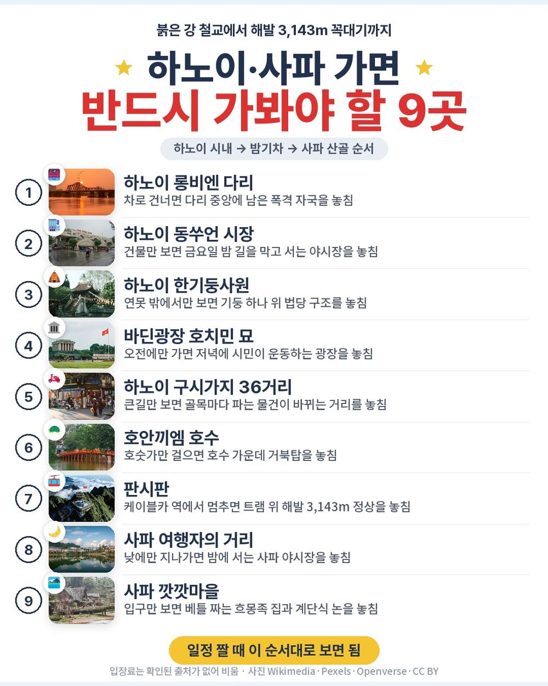
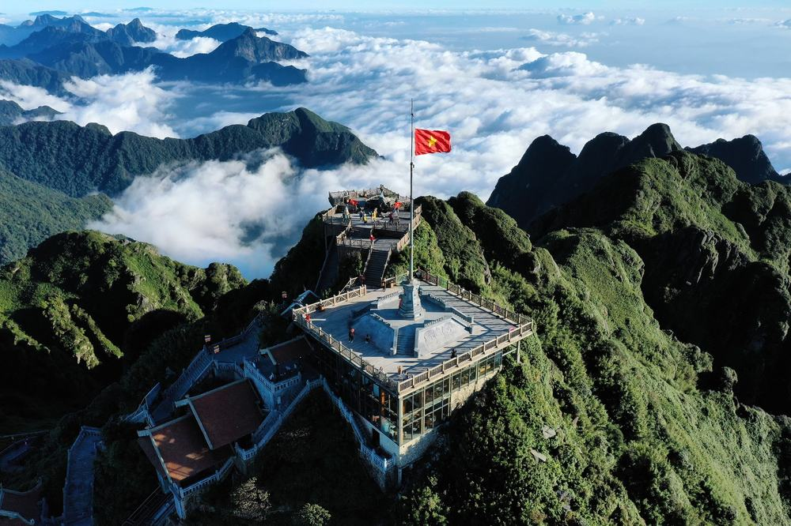
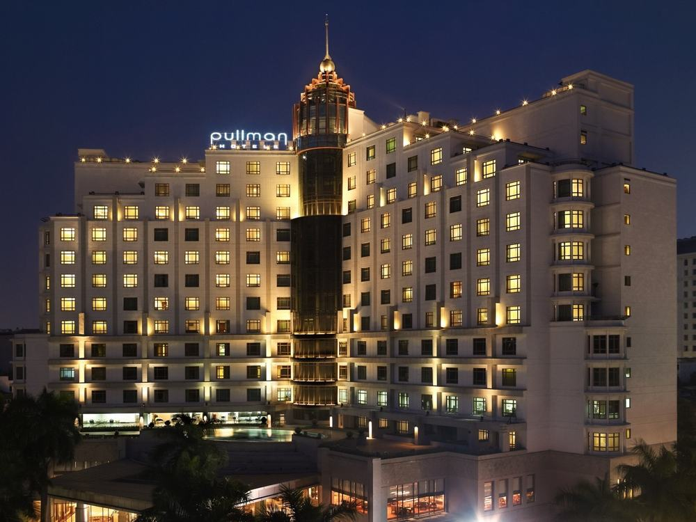
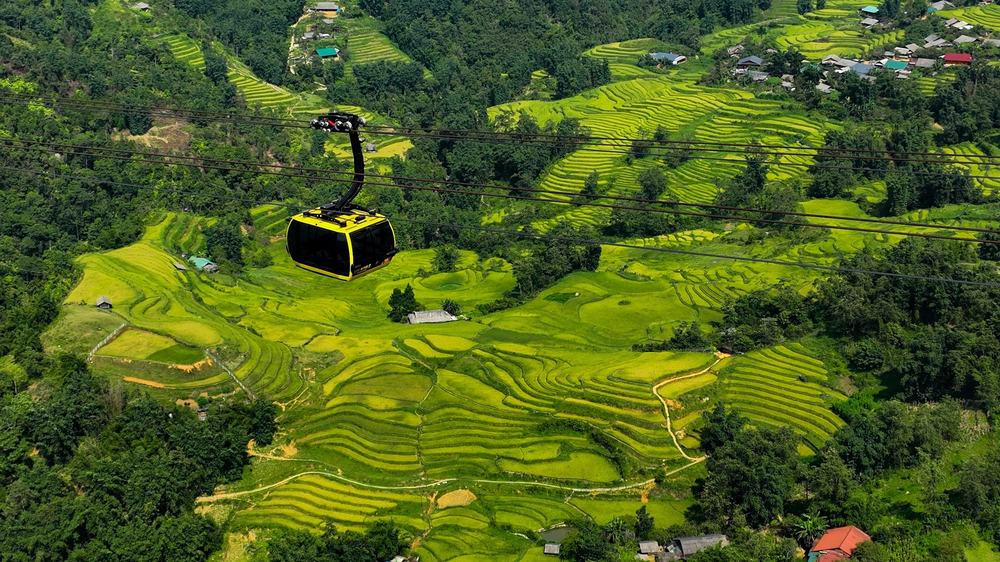
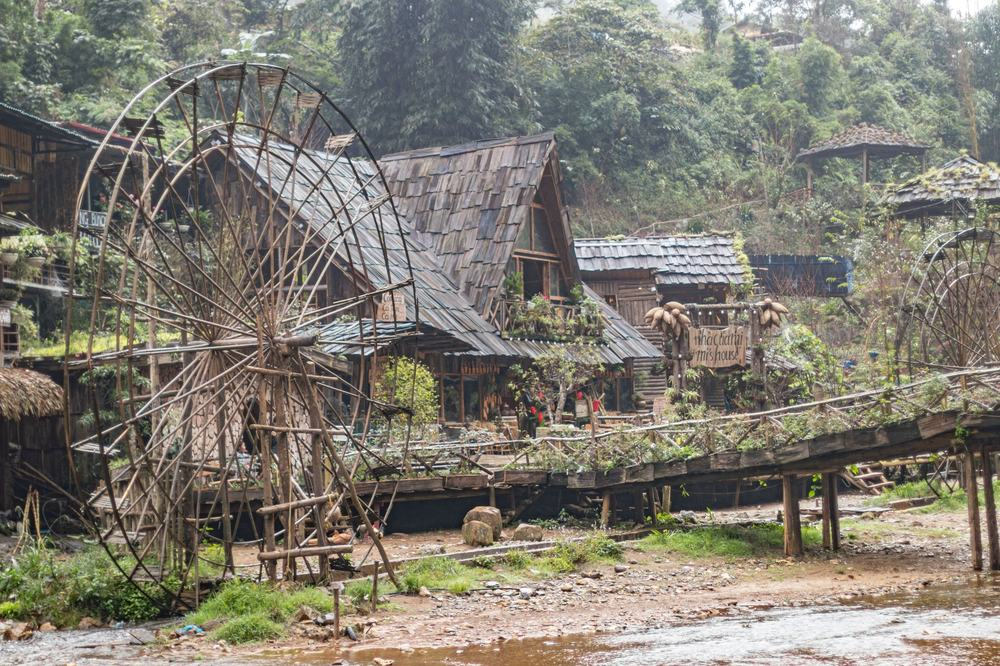

김해에서 낮 비행기로 하노이에 내려 시내를 돌고, 둘째 날 밤 침대열차로 사파에 올라가 판시판 꼭대기까지 기차·케이블카·트램을 갈아타는 일정. 가이드·기사 경비가 값에 이미 들어 있고 쇼핑센터에 들르지 않는다는 게 이 상품의 특징.
직접 다녀온 후기가 아니라, 하나투어 일정표와 포함·불포함 원문을 하나씩 따져 본 글임.
결론 — 추천. 판시판을 탈것으로 편하게 오르고 현지 경비까지 값 안에 있음. 다만 4인실 침대열차가 불편한 분은 맞지 않음.
오늘 기준 출발일별 요금 보기
https://package-researcher.github.io/r/hanoi_hanatour_20261118-t.html

| 항목 | 내용 |
|---|---|
| 가격 | 1인 1,559,900원 (성인 · 11월 출발 기준) · 2인 3,119,800원 |
| 여행사 | 하나투어 |
| 항공 | 베트남항공 직항 · 김해 10:35 → 하노이 13:15 / 하노이 00:25 → 김해 06:10 |
| 숙소 | 하노이 호텔 1박 + 사파행 침대열차 1박(4인 1실) + 사파 호텔 1박 · 예정 호텔 또는 동급 |
| 일정 | 3박 5일 · 버스 · 한국어 가이드 · 쇼핑센터 없음 · 가이드·기사 경비 포함 · 최소 8명 |
▶ 내 출발일 오늘 기준 요금 확인 (제휴 링크 · 예약 시 수수료를 받으며 가격은 같습니다)
▶ 10월 25일 기준 하노이 패키지 최저 41만 9천원부터 — 출발일별 값 한 화면에: 비교 페이지
같은 일정을 파라타항공으로 가는 상품은 1인 1,499,000원임(10월 25일 기준 · 출발일마다 다름).
| 번호 | 내용 | 한 줄 답 |
|---|---|---|
| 1 | 이 값에 들어 있는 것 | 탈것 다섯 가지 |
| 2 | 현장에서 더 낼 돈 | 매너팁만, 자율 |
| 3 | 일정과 체력 | 버스 약 11시간 |
| 4 | 자유여행으로 짜면 | 1인 약 121만원 |
| 5 | 맞는 분 · 안 맞는 분 | 4인실 괜찮은 분 |

155만 9,900원 안에 든 걸 세어 보면 이렇다.
- 베트남항공 김해–하노이 직항 왕복, 유류할증료·공항세 포함
- 하노이 호텔 1박, 사파 호텔 1박(2인 1실), 그리고 하노이역 22:00 출발 사파행 침대열차 1박
- 식사 10회. 반쎄오, 분짜, 꽌안응온 세트, 사파 아침 쌀국수, 비엣트레킹 가정식, 무제한 삼겹살, 스카이뷰레스토랑, 스파이스빌라
탈것과 체험도 값 안에 있음.
- 판시판 등산열차 약 10분 · 케이블카 약 25분 · 트램 약 10분(올라갈 때만), 정상 실내에서 컵라면 1인 1개
- 하노이 스트리트카, 오키드스파 아로마 마사지, 하이랜드 커피 음료 1잔, 사파에서 하노이로 내려오는 슬리핑 버스
- 관광지 입장료, 가이드·기사 경비, 한국어 가이드, 전용 차량, 여행자보험
관광은 하노이 하루 반, 사파 하루 반으로 나뉨.
- 하노이: 예술거리 · 롱비엔 다리 · 동쑤언 · 소수민족 박물관(월요일엔 호아로 수용소) · 한기둥사원 · 바딘광장 · 구시가지 36거리 · 호안끼엠 호수
- 사파: 판시판 · 사파 여행자의 거리 · 깟깟마을
쇼핑센터는 들르지 않음. 선택관광 목록이 상품 페이지에 길게 붙어 있지만 하나투어 공통 목록이고, 안 하면 근처에서 자유시간을 갖거나 호텔로 가면 됨.

호텔은 일정표 기준 하노이 풀먼 하노이, 사파 레이디 힐 사파 리조트. 상품 소개 쪽엔 돌체 골든레이크·실크패스로 적혀 있어서, 확정은 예약 뒤 담당자 안내로 보는 편이 맞음. 침대는 더블이나 트윈이 무작위로 나옴.
| 항목 | 금액 | 비고 |
|---|---|---|
| 가이드·기사 경비 | 0원 | 상품가에 포함 |
| 매너팁 | 고르는 만큼 | 테이블·객실·포터·마사지 팁, 안 내도 불이익 없음 |
| 선택관광 | 고르는 만큼 | 사파 글래스브릿지 45달러 · 알파인코스터 25달러 등 |
| 혼자 쓰는 방 | 별도 문의 | 호텔 2박에만 붙음, 침대열차는 4인 1실 그대로 |
| 개인 경비 | 고르는 만큼 | 물값 · 자유시간 비용 |
| 합계 (2인) | 0원 (반드시 내는 돈) | 상품가 2인 3,119,800원이 곧 총액 |
두 사람이면 상품가 311만 9,800원이 사실상 총액. 다른 동남아 패키지라면 따로 챙겨야 했을 경비가 들어 있어서, 현지에서 달러를 크게 바꿀 일이 없음.

| 일차 | 가는 곳 | 버스 | 걷기 | 점심 · 저녁 |
|---|---|---|---|---|
| DAY 1 | 10:35 김해 출발 → 13:15 하노이 → 반미 → 예술거리 → 롱비엔 다리 → 동쑤언 | 약 1.5시간 | 보통 | 기내식 · 반쎄오 |
| DAY 2 | 소수민족 박물관 → 한기둥사원·바딘광장 → 스트리트카 → 호안끼엠 → 마사지 → 22:00 침대열차 | 약 1.5시간 | 보통 | 분짜 · 꽌안응온 |
| DAY 3 | 05:55 라오까이역 → 판시판 열차·케이블카·트램 → 정상 컵라면 → 사파 호텔 → 여행자의 거리 | 약 1시간 | 보통 | 비엣트레킹 · 무제한 삼겹살 |
| DAY 4 | 깟깟마을 약 2시간 → 슬리핑 버스 약 6시간 → 하노이 → 공항 | 약 7시간 | 많음 | 스카이뷰레스토랑 · 스파이스빌라 |
| DAY 5 | 00:25 하노이 출발 → 06:10 김해 | — | 적음 | 기내식 |
버스는 모두 약 11시간인데 그 가운데 6시간이 넷째 날 슬리핑 버스에 몰려 있음. 앉는 버스가 아니라 누워 가는 버스라는 점은 다행이고, 그 뒤 공항까지 약 40분 가서 새벽 비행기를 탐. 넷째 날은 호텔 없이 끝나는 날.
걷는 건 넷째 날 아침 깟깟마을이 제일 많음. 약 2시간 흙길이고 젖어 있을 때가 많아, 미끄럼 방지 운동화나 등산화를 신으라고 안내돼 있음. 판시판은 해발 3,143m라 고도에 민감한 분은 출발 전에 의사와 상의하라는 안내도 있음. 무릎이 불편하신 분은 정상부 계단 앞에서 가이드에게 미리 말해 두면 편함.
같은 목적지 다른 여행사 패키지, 쇼핑·선택관광·가이드 경비까지 비교
https://pkg-lab.com/go/?q=%ED%95%98%EB%85%B8%EC%9D%B4+11%EC%9B%94&utm_source=blog&utm_medium=post&utm_campaign=daily

| 항목 | 금액 | 근거 |
|---|---|---|
| 김해–하노이 왕복 항공 | 588,900원 | PUS↔HAN 직항 왕복 1인 (패키지와 같은 출발일 · 2026-10-25 마이리얼트립 조회) |
| 호텔 2박 | 150,000원 | 하노이 1박 + 사파 1박, 2인 1실 1인분 (추정) |
| 침대열차 · 슬리핑 버스 | 90,000원 | 하노이→라오까이 침대칸 + 사파→하노이 버스 (추정) |
| 판시판 열차·케이블카·트램 | 90,000원 | 3단계 탑승권 (추정) |
| 식사 (10끼) | 150,000원 | 현지 식당 기준 (추정) |
| 마사지 · 스트리트카 · 입장 | 70,000원 | 아로마 마사지 1회 포함 (추정) |
| 공항 이동 · 라오까이↔사파 차량 | 50,000원 | 픽업·셔틀 (추정) |
| 여행자보험 · 유심 | 20,000원 | 5일 기준 (추정) |
| 가이드 | — | 자유여행은 없음 |
| 합계 | 약 1,208,900원 |
혼자 짜면 1인 약 121만원. 패키지는 155만 9,900원이라 패키지가 35만원쯤 더 듦. 그 차이에 한국어 가이드와 침대열차·버스 예매, 새벽 5시 55분 라오까이역 픽업이 들어 있는 셈.
이동이 이 여행의 핵심이라 차이가 큼. 하노이에서 사파까지는 밤기차로 약 8시간, 내려올 땐 버스로 약 6시간이 걸리는 길이고, 열차 칸이나 버스 좌석을 직접 잡고 새벽역에서 차를 구해야 함. 패키지는 그 연결을 가이드가 맡음.
| 맞는 분 | 안 맞는 분 |
|---|---|
| 판시판 정상을 탈것으로 편하게 오르고 싶은 분 | 4인실 침대열차·공용 화장실이 불편한 분 |
| 쇼핑 없이 현지 경비까지 값에 넣고 싶은 분 | 6시간 버스 뒤 밤 비행기가 힘드신 분 |
| 침대열차와 슬리핑 버스를 여행의 재미로 즐기실 분 | 고도에 민감해 미리 상담이 필요한 분 |
Q. 하노이 패키지 노쇼핑 맞나요?
A. 맞음. 단체 쇼핑센터에 들르지 않는 상품이라고 적혀 있음. 일정에 있는 동쑤언은 시장 구경이고 구매 일정이 아님.
Q. 하노이 패키지 노옵션인가요?
A. 선택관광 목록은 있음. 다만 고르지 않아도 되고, 안 하면 근처 자유시간이나 호텔 이동으로 대신함. 마사지와 스트리트카는 이미 값에 포함.
Q. 사파 침대열차는 몇 명이 한 칸을 쓰나요?
A. 4명. 위아래 침대이고 화장실은 함께 쓰며 샤워실은 없음. 2인실·3인실은 따로 문의하면 된다고 안내돼 있음.
하노이 시내를 하루 반 돌고 밤기차로 사파에 올라가, 판시판 꼭대기와 흐몽족 마을을 보고 누워 가는 버스로 내려오는 일정. 4인실 침대칸과 긴 버스가 괜찮다면 경비까지 들어 있어 현지에서 계산할 게 거의 없는 구성임.
출발일마다 값이 달라서, 가시려는 날짜 요금부터 확인해 보면 됨.
오늘 기준 출발일별 요금 보기
https://package-researcher.github.io/r/hanoi_hanatour_20261118-e.html
이 글에는 네이버 제휴 링크가 포함되어 있으며, 링크를 통해 예약하시면 일정 수수료를 받습니다. 가격은 동일합니다. 가격과 구성은 2026년 10월 25일 확인 기준이며 출발일에 따라 달라질 수 있습니다.
▶ 이 상품, 영상으로 보기 (유튜브)
▶ 하노이 패키지 오늘 값 나란히 비교
▶ 같은 목적지 다른 여행사 패키지, 쇼핑·선택관광·가이드 경비까지 비교: pkg-lab.com